The Learning Begins Fasten Your Seatbelt!
The Learning Begins Fasten Your Seatbelt!
OneStream’s High-Level Learning Road Map
This chapter is all about understanding the high-level end-to-end of OneStream. The rest of the book will then break it down into manageable modules. We will do a first pass on how OneStream works and then – from the next chapter onwards – learn why it works.
Here is this chapter’s learning journey:
Figure 2.1
As we progress, it will be easier to relate our understanding of OneStream concepts to a working organization. As mentioned in the first chapter, we shall be using Top Training Inc., a world-class training company that has implemented OneStream as part of its core financial operations of planning and consolidation, making extensive use of workflow and reporting in OneStream.
Top Training offers soft skills classroom and online courses, training materials, and subscriptions to resources and podcasts. Their headquarters are based in the US, with satellite offices globally, working mainly on a business-to-business model that serves clients in the Americas, Europe, and Asia Pacific.
There are 500 employees, comprised of executives, instructors, and support staff, working in finance, product development, operations, and human resources.
As you work through the book, consider yourself the new Top Training OneStream administrator (congrats on your new role!), and your author will be a OneStream consultant beside you. Let me start by introducing you to the user interface.
The Learning Begins Fasten Your Seatbelt!
User Interface
The platform’s Graphical User Interface (GUI) is logged into by selecting an application. Then, the panes, tabs, menu selections and icons are seen. A user’s interface view and selection options will depend on the user’s role, with features that may or may not be available (as determined by security and/or configuration settings).
The left navigation pane has three tabs: OnePlace, Application, and System. Access to a particular tab is through security settings, driven by the user’s login and their OneStream role within the organization. For example, an end-user might only be able to see the OnePlace tab, a power-user role might only be able to see the OnePlace and Application tabs, and an administrator will be able to see all three.
Further, certain menu options in each tab may or may not be visible to the end-user or power-user. The administrator will generally see everything, unless it is decided that admin tasks should be split between two team members, one being the application administrator (seeing the OnePlace and Application tabs) and the other a system administrator (only seeing the System tab).
The pane on the right side holds the Point Of View (POV) settings that can be unique to each user. The Cube POV within the POV pane will contain the default settings that could be applied when, for example, running reports. For a first-time login, some of the POV dimensions could show just a question mark (instead of a selected member), and this indicates that a selection needs to be made (as mentioned later in this chapter).
Both the Navigation pane and the Cube POV pane can be expanded or collapsed (shown or hidden) by clicking the three horizontal lines icon on the far left (fondly referred to as the hamburger menu) for the Navigation pane, or clicking the cube (with a three horizontal-line backdrop) on the far right for the Cube POV pane. These panes can be pinned to keep them expanded permanently.
On occasion, after logging in, both panes may be hidden automatically. This will then lead to a blank white screen (with the OneStream black banner and icons on top).
In between both panes is a series of icons providing the user with features such as the ability to select different applications, task activity logs, refresh, and accessible help documentation.
The File Explorer is a useful option for saving OneStream-formatted files as well as other formats such as PDF outputs, spreadsheets, and text documents. Figure 2.2 shows the login to the OneStream Windows app.
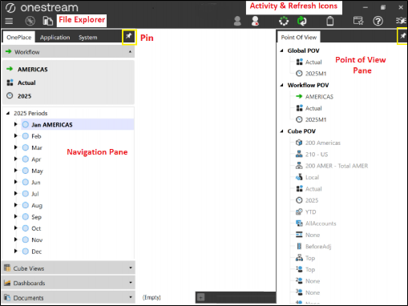
Figure 2.2
An end-user may have the option to login from OneStream’s Modern Browser Experience (MBE).
The Learning Begins Fasten Your Seatbelt! › User Interface
Creating a New Application
An application is the OneStream database containing all the objects for a particular use case. In a OneStream environment, there can be many applications.
For a new blank application database to be created, this is done in the System tab from the Applications menu.
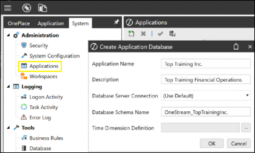
Figure 2.3
For Software as a Service (SaaS) customers, copying applications can be done using the Cloud Administration Tool that can be downloaded from the Solution Exchange. The creation of a new application and the database behind the application will require the assistance of OneStream support.
With a brief overview of the GUI discussed, let us now talk about dimensions and members, then cubes, workflows, reporting, and security, together with some background properties.
The Learning Begins Fasten Your Seatbelt!
Let’s Talk About Dimensions and Members
Dimensions are the foundation of platform design. Commonly known as metadata (data of data), they each contain a set of related members. These dimensions will eventually be part of a selection process to build our cubes.
If we take our organization’s setup, for example, we know Top Training is based in various locations, sells training products, and does this over a period of time. These can all be represented by building dimensions called Location, Products, and using the Time dimension that has been created by OneStream (simple!).
Members are items within a dimension that will point to data in a Cube View, which will then be used for reporting. For our example, the members will be:
New York (residing in the
Locationdimension)Software course (residing in the
Productsdimension)2025M1 - Jan 2025 (residing in the
Timedimension)
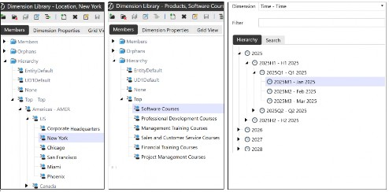
Figure 2.4
To make building even easier, OneStream has a genius way of categorizing dimensions, called dimension types. Each one has its own setup, and in the next chapter, we will be taking a deep dive into dimension types and creating dimensions and their members.
The Learning Begins Fasten Your Seatbelt! › Let’s Talk About Dimensions and Members
Members Hierarchies
As mentioned, a member is an item within a dimension, and this is where data is loaded. Later, when we discuss cubes, we’ll identify that each data cell point in our cube will be represented by one member from each of the dimensions that make up that cube.
There are going to be many members in a dimension, some racking up to thousands. The typical setup of all these members is hierarchies (ordered by levels). Hierarchy terminology is key to determining the relationship between the members, especially for reporting purposes.
Using Figure 2.5, below, we can identify the hierarchy relationship terminology of parent and child, base members, and siblings.
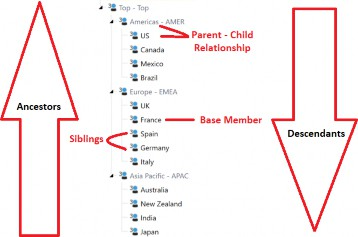
Figure 2.5
Digging deeper…
The Learning Begins Fasten Your Seatbelt! › Let’s Talk About Dimensions and Members › Members Hierarchies
Parent Member
A parent member is the main and the top member of the group, overseeing a common grouping known as the ‘child’ members. Americas – AMER is an example of the parent-level member, with US, Canada, Mexico and Brazil as the child members.
The Learning Begins Fasten Your Seatbelt! › Let’s Talk About Dimensions and Members › Members Hierarchies
Child Member
A child member sits below a parent member and may or may not inherit certain properties from the parent, such as currency or security settings. US is an example of a child member situated directly below the parent member. In this example, it is also a base member.
The Learning Begins Fasten Your Seatbelt! › Let’s Talk About Dimensions and Members › Members Hierarchies
Base Member
A base member is at the bottom or lowest level of a hierarchy. For OneStream dimensions, data is only entered at the base level (with an exception for the Origin dimension discussed later).
France is an example of the lowest level member – a base member.
Data can be entered for France, and the country is also a child member for Europe – EMEA.
The Learning Begins Fasten Your Seatbelt! › Let’s Talk About Dimensions and Members › Members Hierarchies
Sibling Member
Sibling members in a hierarchy are members that share the same parent.
Spain and Germany are examples of sibling members to France as they share the same parent, called Europe - EMEA.
The Learning Begins Fasten Your Seatbelt! › Let’s Talk About Dimensions and Members › Members Hierarchies
Ancestors
Ancestors is the grouping structure that builds up through all the levels to the Top member. It can typically start from the base member and include all levels of parents; for example, Mexico’s ancestors will be Americas – AMER and Top – Top.
The Learning Begins Fasten Your Seatbelt! › Let’s Talk About Dimensions and Members › Members Hierarchies
Descendants
Descendants work in the opposite direction to ancestors. From the Top member downwards, moving through all levels to the bottom Japan member.
The hierarchy in Figure 2.5 shows an even level hierarchy relationship, where every child has a parent level above.
Hierarchies can be varied in structure. A ragged hierarchy, could be utilized where a base member may have a parent directly one level above, and another base member’s parent is three levels above.
For example, in Figure 2.6, 431- Support Center South and 432 - Support Center North report to parent 430 – India, but support center 433 - Support Center Central reports to a higher-level parent… 400 APAC – Total APAC.
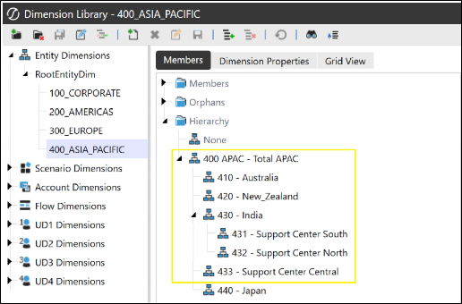
Figure 2.6
In turn, an alternate hierarchy is a variation of the main statutory hierarchy for internal management reporting purposes where the children are reporting to a different set of parents. This can be constructed within an existing Entity dimension, copying the main statutory hierarchy members to regroup under a new hierarchy structure.
The Learning Begins Fasten Your Seatbelt!
Dimensions Make a Cube
Cubes are formed by selecting the relevant dimensions. They are designed with business areas in mind and which members those areas will be using. A cube is considered a multidimensional structure that controls how data is stored, calculated, translated and consolidated, as well as how it will be used for analyzing and finally reporting.
The multidimensional setup will provide the flexibility to rotate members between rows, columns and pages with the option to nest dimensions together. Where members intersect is known as a data point. All of this will be discussed in the reporting section of the book when we look at Cube Views.
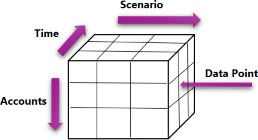
Figure 2.7
A small number of applications contain just one cube, but it is common to have applications with multiple cubes. Some will be linked together to provide the extensibility feature we will be discussing further in the cubes chapter, and some will be stand-alone (also known as monolithic). In OneStream, once a cube is created and data loaded, a Cube View is built where the data is then viewed, analyzed, and pivoted between rows, columns, and pages.
The formation of a cube is created in the cube’s menu using the Cube properties and
Cube dimension tabs.
In the Cube properties tab (as shown in Figure 2.8), the Time dimension is selected, security settings are configured, any business rules are applied for calculations, and the currency code and rates for translations are chosen, alongside how the cube will be used within the workflow settings.
If the cube is for consolidating business areas, then it will be considered the top level (or super cube), to which other cubes are linked.
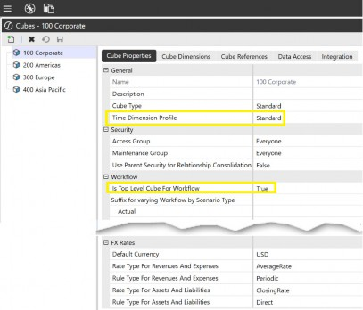
Figure 2.8
The Cube dimensions tab has the facility to choose which dimensions can be selected by Scenario Type. Each Scenario Type can have a different selection of dimensions.
In Figure 2.9, we are able to see the 200 Americas cube for Top Training. It requires an initial entity and Scenario dimension selection for the default setting, and these two selections will then be shared across all Scenario Types. Additional dimension default types can continue to be selected, or selected instead by Scenario Type as we have done for the Budget, where the selections have been made from the Account dimension to the final User Defined dimension.
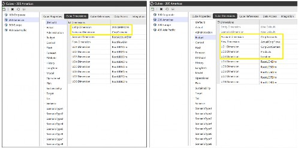
Figure 2.9
The Learning Begins Fasten Your Seatbelt! › Dimensions Make a Cube
Cube Point of View (POV)
Figure 2.10, below, shows a cube’s point of view (POV). These are a user’s default members, used in, for example, a Cube View report if the Cube View POV has no selected members.
The Cube POV in the right-hand pane represents a chosen cube, alongside the selection of dimension members from each of the cube’s dimension types.
All users can have Cube POVs that are unique to them and their reporting needs, and can be focused on their business areas. For example, US users will set their Cube POV to the 200 Americas cube, and possibly a particular user-defined location such as New York, whereas in the UK, a user will have the 300 Europe cube and user-defined location London.
Note the distinction between a Cube POV and the Cube View POV, which are the local settings within a Cube View. The reports generated by the user will initially use the member selection within the Cube View POV, but – where no selection has been made – the Cube POV setting will act as the next option. Therefore, the Cube POV could end up controlling the data reported in many Cube Views, dashboards, and – for Spreadsheet users – the Cube POV will set the default selections when creating reports called QuickViews (discussed in the reporting chapters).
The Cube POV can be saved to favorites in the File Explorer and reinstated back to the original setting if required. Other options available are setting the Cube POV for new users or copying the current setting directly into a Cube View POV selection (we will cover this later).
If a question mark appears in any of the dimensions because of a member change, it represents an invalid intersection, and a new selection is required for each question mark.
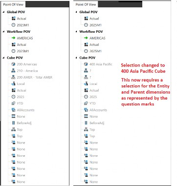
Figure 2.10
The Learning Begins Fasten Your Seatbelt!
Working Through a Workflow
Workflows are constructed to guide users through specific tasks they need to perform at specific times of the reporting cycle. For example, as well as loading monthly values, there may be tasks to enter the month end closing headcount, or to reconcile intercompany balances. All tasks can be coordinated and monitored at a corporate level to eventually have the results consolidated and reported for the whole group.
Tasks such as loading data, data entry, and adjustments can be set either monthly, quarterly, half-yearly, or yearly. The workflow is able to control and organize the tasks and can be customized to the user’s roles and business processes to increase efficiency.
The workflow is constructed within the Application tab and executed by the end-user in the OnePlace tab. The user will initially select their Workflow Point of View (POV), which consists of the Workflow Profile, scenario and year. This selection will then also be reflected in the Workflow POV on the right-hand side.
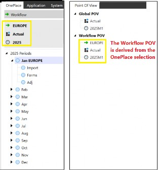
Figure 2.11
The Workflow Profile type depends on the user’s role in the organization and consists of selecting either a base input where tasks will comprise of importing data, entering data in forms and (if required) making account adjustments using journal templates, or a parent input. Parent input consists of only entering data in forms and the ability to make account changes using journal templates. The third option is review, where no data entry can be made, just the ability to confirm data quality and certify the governance of the data.
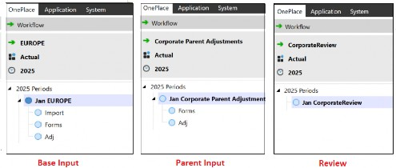
Figure 2.12
Task options – based on workflow requirements – can be renamed, or additional ones added. Administrators are also able to disable a task from the Application tab. This is then not seen in the OnePlace tab.
Figure 2.13 shows the renaming of the base input profile tasks that are applicable to Top Training, but the names can be changed to cater for any organization’s requirements. Note how the ‘Adj’ task (for journal adjustments) that was seen in Figure 2.12 is not showing in Top Training’s base input profile below. This is to do with a task configuration in the Application tab that can be turned off if a task is not required.
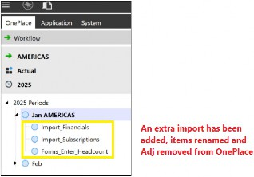
Figure 2.13
The Learning Begins Fasten Your Seatbelt! › Working Through a Workflow
Typical Workflow Tasks
The administrator can set up many combinations of tasks. The below covers quite a few, and broadly represents what a user will be facing.
The Learning Begins Fasten Your Seatbelt! › Working Through a Workflow
Lowest (Base) Level Tasks
The Learning Begins Fasten Your Seatbelt! › Working Through a Workflow › Lowest (Base) Level Tasks
Import
Consists of uploading a file or direct connection to a source system for data to first be imported to a staging area.
The Learning Begins Fasten Your Seatbelt! › Working Through a Workflow › Lowest (Base) Level Tasks
Validate
Data is transformed and checked for omitted mappings and any invalid intersections that must be corrected before the final load to the cube.
The Learning Begins Fasten Your Seatbelt! › Working Through a Workflow › Lowest (Base) Level Tasks
Load
Once validation has passed, this is the point where data is then loaded to the cube.
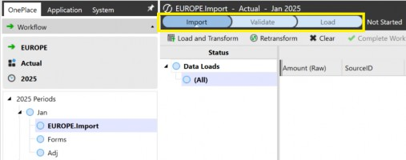
Figure 2.14
The Learning Begins Fasten Your Seatbelt! › Working Through a Workflow › Lowest (Base) Level Tasks
Forms
Forms can be a required or an optional part of the process for data to be manually entered or loaded. Form data can be key metrics such as headcount, or product managers entering unit forecasts.
The Learning Begins Fasten Your Seatbelt! › Working Through a Workflow › Lowest (Base) Level Tasks
Pre-Process
Pre-Process can be a useful task for running some preliminary calculations before any manual data entry or adjustments in forms.
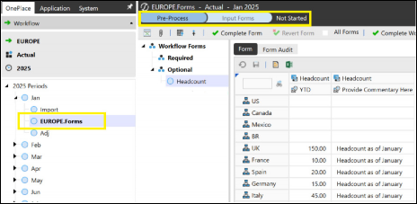
Figure 2.15
The Learning Begins Fasten Your Seatbelt! › Working Through a Workflow › Lowest (Base) Level Tasks
Journal Input
Sometimes, users need to be able to adjust data. To allow this, the administrator will have created permissions for a journal template to be used in the OnePlace tab.
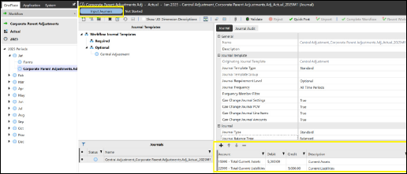
Figure 2.16
The Learning Begins Fasten Your Seatbelt! › Working Through a Workflow
Next Level Up Tasks
The Learning Begins Fasten Your Seatbelt! › Working Through a Workflow › Next Level Up Tasks
Process
At this stage, any calculation definitions (set on the workflow, as explained later in the book) embedded for the cube (calculate, translate, consolidate) will be executed when Process Cube is selected.
The Learning Begins Fasten Your Seatbelt! › Working Through a Workflow › Next Level Up Tasks
Confirm
For the confirm workflow task, data can typically be checked for its validity. This might entail balance sheets balancing and/or annotation being added.
The Learning Begins Fasten Your Seatbelt! › Working Through a Workflow › Next Level Up Tasks
Workspace
This is the most commonly used workflow task in Planning. This task is used to define specific steps that involve user interactions with dashboards or other Workspace-related tasks.
The Learning Begins Fasten Your Seatbelt! › Working Through a Workflow › Next Level Up Tasks
Certify
Certify is considered the final step of the workflow. Here, a series of questions may be embedded into the administrator’s process to verify that data governance requirements have been achieved. Once answered satisfactorily, the sign-off process can begin.
If there are no questions to be assigned, the administrator can select quick certify, which is an out-of-the-box option that requires the user to certify the workflow is complete.
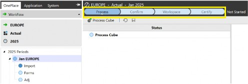
Figure 2.17
Task status is colored. Blue means it has not started; red means there is an error that needs fixing; green means the task has been completed.
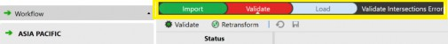
Figure 2.18
The Learning Begins Fasten Your Seatbelt! › Working Through a Workflow
Highest Level Tasks: Multi-Period Processing
Multi-period processing allows a number of workflow steps to be completed for one or more periods in one executed batch run. These can consist of locking (as well as unlocking) to protect data or other options such as running the cube calculations or certifying the workflow.
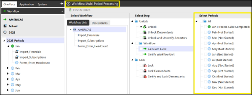
Figure 2.19
The Learning Begins Fasten Your Seatbelt! › Working Through a Workflow
Corporate Only Workflow Requirement Option
Where Top Training has a centralized requirement, especially when controlling import data, the administrator of the OneStream platform can set up the import to only be performed by corporate. This can be on behalf of all entities and is known as a central import. Doing this prevents individual entities from loading data, and their facility is greyed out (indicating a central load setup). Other tasks, like data entry forms and journal adjustments, can still be carried out if activated.
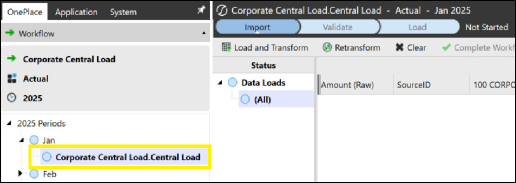
Figure 2.20
The Learning Begins Fasten Your Seatbelt!
Reporting Overview
With OneStream’s seamless input functionality bringing in data from various external sources, it also has an extraordinary ability to deliver many options for data output.
Data outputs can be used for querying, adjusting, analyzing, and then finally reporting to stakeholders. At this stage of the book, we shall explore these options then go into more detail in the reporting chapters.
The Learning Begins Fasten Your Seatbelt! › Reporting Overview
Cube Views
Simple to create and maintain, and considered the main building blocks of reports, Cube Views can be used as a stand-alone reporting tool or embedded in dashboards, spreadsheets, report books, and extensible documents.
Cube Views display cube data that can be queried or additional data added. There is also the ability for the user (if granted permission by the administrator) to run calculations, translations, and consolidations directly from the Cube View. Cube Views can be converted to a report viewer format or exported to Spreadsheets.
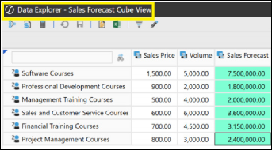
Figure 2.21
The Learning Begins Fasten Your Seatbelt! › Reporting Overview
Dashboards
These are customer-designed and used to query data from the cube (and possibly data from outside, too; for example, from the staging area or external databases).
Dashboards can display other dashboards within themselves, and can also contain Cube Views, spreadsheets, report books and extensible documents.
When used for the purpose of executive reporting, dashboards can display key performance indicators (KPIs), charts, tables, and commentary. They provide the data snapshots that an organization needs. Dashboards can also be used for the purpose of functional interaction and analysis, working on a series of tasks, and can be used to modify or calculate data.
Finally, end-users can be set up to interact with dashboards. This can be by clicking specific cells on interactive charts to then view a change in a table. Or the dashboard can be used as read-only to view the KPIs in real time.
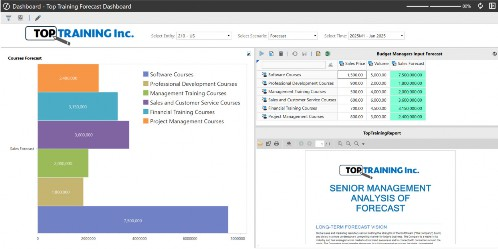
Figure 2.22
The Learning Begins Fasten Your Seatbelt! › Reporting Overview
Extensible Documents
The idea of extensible documents is to embed OneStream parameters (variables used as placeholders that are executed at report run time, replacing the parameter setting with actual OneStream data and metadata) in Word, PowerPoint, Excel or text files. Extensible documents are low maintenance for the report author as the specifics of reports are automatically updated each month (e.g., time periods and various KPIs).
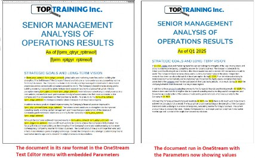
Figure 2.23
The Learning Begins Fasten Your Seatbelt! › Reporting Overview
Spreadsheets
OneStream has two choices when it comes to spreadsheets. A built-in Spreadsheet tool within the platform which comprises most Excel functionality, or an Excel Add-In which can be installed in the Excel application.
The options are to bring a Cube View into the Spreadsheet or create Quick Views. These provide OneStream metadata connections to manipulate the data and make use of the Quick View POV, which also acts as a pivot table.
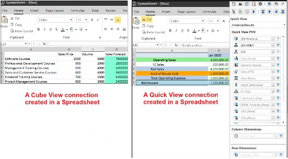
Figure 2.24
Creating Table Views is another option in Spreadsheets, allowing users to interact with data in a tabular format. Data can be retrieved from OneStream using a business rule to populate the Table View.
The Learning Begins Fasten Your Seatbelt! › Reporting Overview
Report Books
Report books are a combination of various report types run as one report, and are made up of Cube Views, spreadsheets, dashboard charts, and extensible documents. Report books can be shared as PDFs, spreadsheets, or zip files.
Ultimately, the use of this feature will be to automate the generation of multiple reports, and be able to adjust which POVs the reports are using. For example, being able to run a report book which is made up of Cube View reports, extensible documents, and a dashboard chart, repeated for as many entities required, and all in one final preview.
The Learning Begins Fasten Your Seatbelt!
Application Properties and FX Rates
Some platform settings are applied soon after the creation of the application and are located within Application Properties (under the Tools section in the left-hand navigation pane). These will be the default property settings of the application and are made up of three tabs:
The General tab has the Global Point of View settings that apply to all Scenario Types and must be set for users to be able to load data as part of their workflow in OnePlace. As we will be looking at troubleshooting issues towards the end of the book, checking if the Global Point of View has been configured as one option – when an import error occurs – is something to bear in mind.
Other key settings include the addition of Top Training’s name and logo, which will then feature on reports by default. Also, we can set the decimal number format for reports here.
The Currency Filter provides the ability to select a range of currency codes used by the organization; the currency codes that are set in Application Properties will then be the only selection codes available when entering FX rates, for example.
Finally, take a look at Lock After Certify, which we’ll revisit when we dive into Workflows. This relates to automatically padlocking the workflow once data certification has been completed.
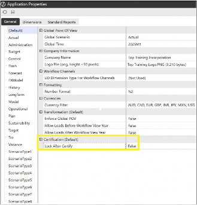
Figure 2.25
The Dimensions tab is a straightforward time and user-defined description setting. When selecting a year option, this tab allows the setting of the start year and end year, then limits the selection to this setting in other parts of the application where time is applicable.
User Defined Description(s) enable names to be entered that will, for example, be reflected in the tooltip when hovering over the dimension in the Cube POV.
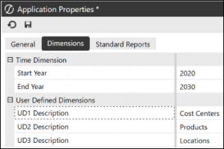
Figure 2.26
The Standard Reports tab allows for formatting of the logo, title, header and footer in the reports. Some settings can be overwritten in specific reports if needed.
The Learning Begins Fasten Your Seatbelt! › Application Properties and FX Rates
Foreign Exchange Currencies
When OneStream has its consolidation hat on for a global group – such as Top Training Inc. – it will inevitably deal with a range of foreign currencies that will eventually need translation to the group currency.
A starting point for FX rates is the selection of currency codes (as mentioned in the Application Properties above). Once these have been established and various entities have been set up with their specific default currency codes, the rates will then be loaded into OneStream.
The rates sit under the Cube section in the left-hand navigation pane and can be manually entered or imported. They are viewed by FX rate type, where the application has predefined selections that cannot be deleted. These are average, opening, closing and historical rates, although further specific rates and rate types can be added if required.
The setup is straightforward. Start by selecting the rate type, then the Time dimension member for which the rate is being stored, the source currency as the starting currency, and the destination currency as the translated one.
The FX rate is read as one unit of the source currency to the value of the destination currency. At the time of writing, this would equate to 1 GBP source being 1.24 USD destination.
Once rates are in OneStream, there is the option to get the values locked by time. A padlock symbol represents this and further changes are no longer possible.
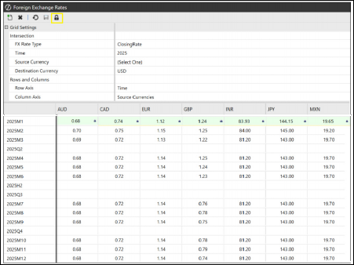
Figure 2.27
The Learning Begins Fasten Your Seatbelt!
Security
Top Training’s data in the OneStream platform is sensitive and requires each user only to see what is relevant to their role. The requirements for security would have been discussed in the analysis and design phases of the project implementation, with the setup and execution implemented during the rollout phase.
Using the jigsaw analogy from the first chapter, it is easier to see the individual tiles that make up security in OneStream first, before we see how they correctly join to provide the bigger picture.
The Learning Begins Fasten Your Seatbelt! › Security
User
A team member in OneStream who was added by the administrator.
The Learning Begins Fasten Your Seatbelt! › Security
Group
Groups are considered objects (see below) in OneStream and can be named to represent a department, location, or team name, or a group can be created for a particular tab in OneStream, for example, a group that only has access to the OnePlace tab.
Each group has relevant users assigned to it. For example, for a group called OnePlace, we will assign all the end-users who should only see the OnePlace tab in the Navigation pane.
The Learning Begins Fasten Your Seatbelt! › Security
Role
Roles have already been predefined within OneStream and provide the user with access to specific actions or pages. For example, Top Training’s power users will have access to building Cube Views and will be assigned the CubeViewPage role. Other users that update the FX Rates will be assigned the FxRatesPage role.
The Learning Begins Fasten Your Seatbelt! › Security
Object
Objects (which can also be referred to as artifacts as these two terms can be used interchangeably) are created items, such as dimensions, Cube Views, dashboards and groups.
The Learning Begins Fasten Your Seatbelt! › Security
Piecing Security Together
OneStream security enables us to create a user, add the user to a group that may contain existing users, and assign the group to an object such as a dimension, cube, or dashboard. This then provides the user with access.
Most objects have a security option – Access Group – which provides view-only access to the users in the group. By comparison, there is also Maintenance Group, which will provide maintenance access such as create new objects, edit, and delete. For example, maintaining Cube Views in Cube View Groups.
Taking it further, there are also predefined application security roles that are only related to the application in question. Here, groups can be slotted in for certain tasks, such as locking or unlocking FX rates in the FX rates page, or disabling the viewing of the FX rates page itself.
In Figure 2.28, below, we have created a user called EndUser who slots into a group called OnePlace Tab Only Group. That group slots into the Top Training Application and OnePlace tab role.
The result: the end user can only access the OnePlace tab in the Navigation pane, and cannot see the Application or System tabs.
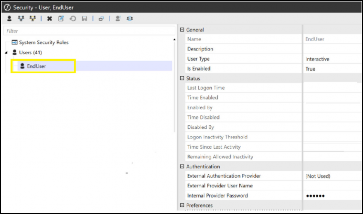
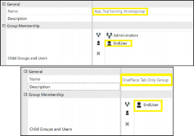
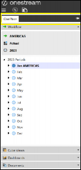
Figure 2.28
Other roles are system security roles that are related to user access for all applications in the environment where groups can be added, for example, in the ViewAllTaskActivity role. Access can also be revoked, so users can be omitted from the task activity page in their user interface login.
It is worth noting that groups can be assigned to other groups, which – in turn – are assigned to objects. Therefore, it is important to keep track of how users have access to objects. As part of the initial design of groups, a naming convention should be used to provide clarity on a user’s level of access. For example, using prefixes such as E_View or E_Write signify if these groups can view the entity only, or write to it.
For a deep dive into security, please see the OneStream Security Essentials book.
The Learning Begins Fasten Your Seatbelt!
Conclusion
To accelerate our understanding of the OneStream platform, we have learned that dimensions are the foundational component. Required to be designed and correctly built (so other components work well), they can always be revisited to add further members when needed.
Also, cubes built with efficiency in mind, alongside well-thought-out workflow designs with the right security settings, will deliver good reporting with Cube Views, dashboards, and spreadsheets presenting the right data to the right team members.
Now, let’s take a deeper dive into what we’ve grasped in this chapter!